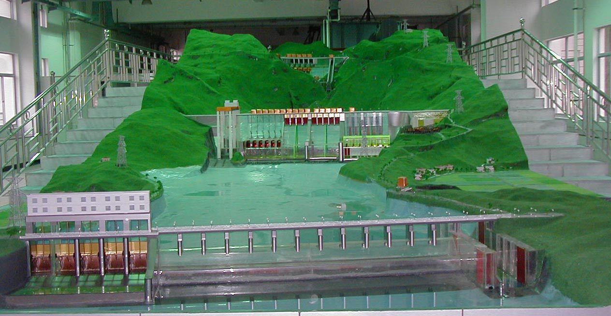
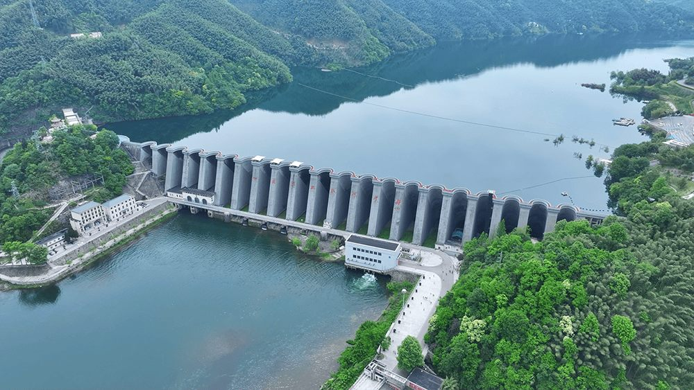
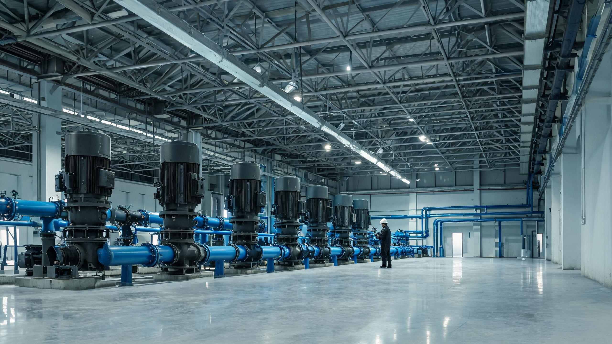
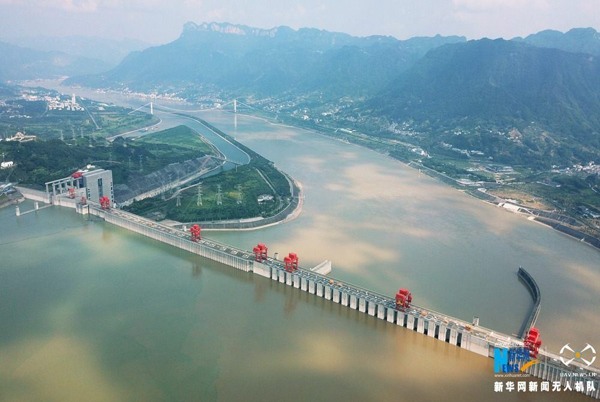
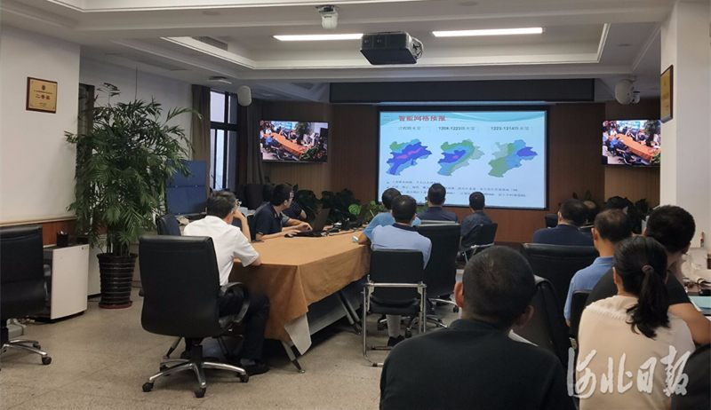
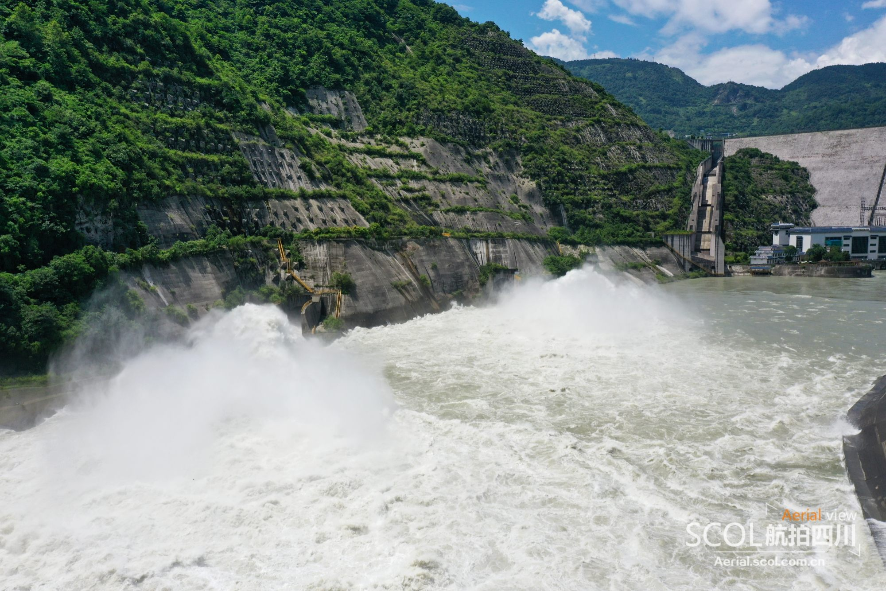
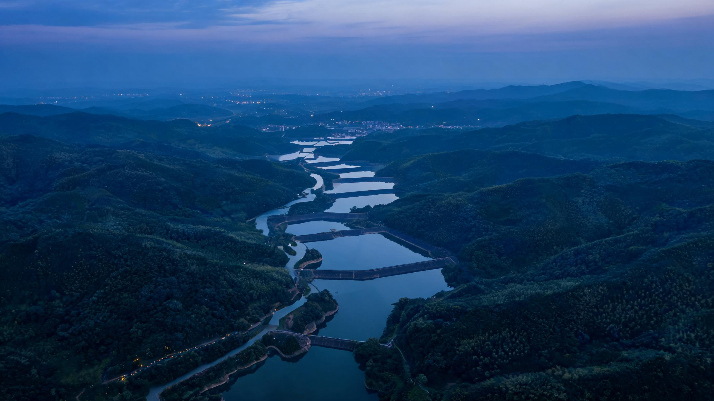

H O H A I · 1 9 1 5 — 2 0 2 6水与智能
一百一十一年，河海以观测记录江河的性情，以方程推演洪水的去向。 今天，我们让这套方法学会呼吸。 数据成为感官，算力成为脉搏，物理仍为骨架。 技术向前一步，判断仍留在人这一侧。
「以水为师，以数为器；算力所至，责任所系。」
00 · 三幕导览
三幕不是并列，而是一条因果链。第一幕给出「凭什么」：学科、方法、工程三组坐标，构成可被调用的方法资产。第二幕回答「怎么变」：以育人为传承，让测、报、算、管四环完成革新；没有第一幕的底座，数字化便无据可依。第三幕追问「谁来担」：场景一旦真实发生，责任就必须重新分配；没有第二幕的系统，这个问题也无从提起。
河海何以言 AI：学科、方法、工程，三组可复核的坐标。
模型未被替换，被替换的是速度：先传承，再让测、报、算、管四环提速。
人将立于何处：先决定谁来裁定，再谈人机共决。
因果链：底蕴提供方法，方法支撑系统，系统把责任推回人。每一节点均对应可核查的年份、项目或公开数据；查无实据者，宁缺不编。
一条暗线
尺子时代，人补信息的缺口；
传感器时代，人补理解的缺口；
共决时代，人补价值的缺口。
01/ 03 · 河海的深厚学科底蕴
自一九一五年张謇创校，至一九六三年「蓄满产流」的四十五度线，再至今日的流域数字孪生——河海的底气，不在一句口号，而在三组可复核的坐标：学科评估之等级、方法底座之纵深、工程落地之实效。这三组坐标之所以重要，是因为它们决定了下一幕 AI 能接住什么、不能接住什么。
目录以卡片呈现：每一张对应一个分部，点击即入；左上角的水滴返回键，可随时回到此处。
1.1 · 学科坐标
先从一九六三年的一条 45 度线讲起：它把「蓄满产流」写成理论，也标出了河海水文方法的起点。再依次回到 1915 年创校、2017 年学科评估、学科链布局与世界坐标——五组可核查的坐标，共同回答河海凭何在这一行业中拥有发言权。
河海的水利传统，既要看校史，也要看方法。先从一九六三年的一条 45 度线讲起：它解释了湿润地区的水为什么这样流，也解释了这所大学为何能在水文模型上先走一步。
1961 年，赵人俊带学生到浙江，在几十个流域上手工点绘降雨径流相关图。曲线前段随降雨增加而变缓，上端却总折成一条 45 度线。1963 年，他与庄一鸰在《华东水利学院学报》发表《降雨径流关系的区域规律》，把这条线写成理论：湿润地区包气带先蓄满，蓄满之后，降雨几乎全部变成径流。
这与教科书里的「超渗产流」不是一回事。前者看包气带是否蓄满，后者看雨强是否超过下渗能力。这不是参数微调，而是对产流机制的重新分类，也直接决定了后面新安江模型的结构。
新安江电站 1957 年动工，1960 年首台机组发电，1965 年竣工。为编制入库径流预报方案，1973 年，赵人俊把蒸散发、产流、水源划分、汇流整合成一个完整系统。
这是中国第一个完整的集总式流域水文模型，具有完全自主知识产权。当时国际上习惯用发明者或首先使用的河流命名，他选了「新安江」。
结构上是「三分」：流域计算分单元、坡面汇流分水源、流域汇流分阶段。不计河道演算，模型共 15 个参数，其中 7 个敏感。缺资料的流域，这套模型也能跑。
从 1963 年的蓄满产流，到 1973 年的完整模型，中间隔了十年。十年做的不是加法，而是把一条结论变成一台可运行的机器。
赵人俊（1924—1993），1945 年毕业于中央大学水利系，1952 年参与筹建华东水利学院，后任水文系主任。资料：河海大学校史、水文水资源学院。
自绘 SVG · 四大部分 + 「三分」结构；参数少，是这个模型能走出国门的核心原因。
1915 年，张謇创办河海工程专门学校，这是中国第一所培养水利人才的高等学府，也开了中国水利高等教育的先河。校址在南京，课程表上第一次成体系地出现水力学、水文、河工。
1952 年院系调整，南京大学水利系与交通大学、同济大学、浙江大学等校的水利系科以及华东水利专科学校组建华东水利学院，钱正英任首任院长；1960 年被中共中央认定为全国重点高校；1985 年恢复「河海大学」校名。
今天的河海是教育部直属全国重点大学，国家「双一流」建设、「211 工程」重点建设、「985 工程优势学科创新平台」建设高校，设有研究生院；在南京设西康路、江宁两个校区，在常州设常州校区。
校名换过几次，问题没换：中国的水，怎么算准、怎么管好。
资料：河海大学《学校简介》（数据截至 2025 年 4 月）、河海大学本科生招生章程（2025 年）。
一条 110 年的线
2017 年 12 月，教育部学位与研究生教育发展中心公布全国第四轮学科评估结果：河海大学水利工程获评 A+，这是同一学科里的最高一档。
同一轮里，土木工程、环境科学与工程位列 A 类，跻身全国前 10%；马克思主义理论、管理科学与工程、工商管理获评 B+，位列全国前 20%。
评估不看学校名气。师资、成果、人才培养、社会服务，一套公开指标，逐项打分。A+ 是同一学科里的最高一档。
对考生来说，这是最硬的一条参考：如果要读水利，河海的水利工程在全国处于第一梯队；如果要读土木或环境，它同样在全国前 10%。
资料：河海大学《我校水利工程学科在第四轮学科评估中获评A+》（2017-12-29）；河海大学学科建设公示。
第四轮学科评估 · 河海位次
A 类 = 全国前 10%。第四轮评估中，河海共有 33 个学科参评。
自绘 · 等级越高，说明在同一学科里站得越靠前；A+ 是最高一档。
两个学科进入国家「双一流」建设名单：水利工程、环境科学与工程（2017 年首轮、2022 年第二轮均在列）。名单由国家按学科水平选定。
国家重点学科层面，河海有 1 个一级学科国家重点学科——水利工程，覆盖 5 个二级学科：水文学及水资源、水力学及河流动力学、水工结构工程、水利水电工程、港口海岸及近海工程；另有 7 个二级学科国家重点学科。
港航不是水利的附属方向：港口、海岸及近海工程是国家重点建设学科，1957 年河海设立我国第一个海洋工程水文专业；今天港口航道与海岸工程是国家级一流本科专业建设点。
本科层面，学校共有 72 个本科专业，其中 37 个入选国家级一流本科专业建设点。从水文、水工到港航、环境，河海在「水」的整条链条上都有布点。
资料：河海大学《学校简介》（2025）；河海大学港口海岸与近海工程学院《学院概况》；国家重点学科建设公告。
水利工程一级学科 · 5 个二级学科
自绘 · 水利工程是一级学科国家重点学科，港航在其中占有独立位置。
水资源工程蝉联软科世界一流学科排名全球第一；工程学、环境/生态学进入 ESI 全球前 1‰，学校共有 10 个学科进入 ESI 前 1%。这些数字都能查到出处。
方法也进入国际业务：1990 年成果载入《中华人民共和国重大科技成果》，为建国 40 年 100 项之一，水文学领域唯一入选；列入世界气象组织（WMO）洪水预报业务系统指南；赵人俊曾担任联合国教科文组织在华国际水文预报培训班主讲；国内 20 多个省与流域应用，成功案例 200 例以上。
三组坐标合起来：河海在行业里是标准、业务体系与学科排名里的一个节点。AI 需要的数据、模型与验证场，这里都有。
资料：河海大学《学校简介》（2025）；软科世界一流学科排名；1990 年国家重大科技成果名录；WMO 洪水预报业务系统指南。口径：不采用「联合国向数十个国家推荐」这一二手说法。
1.2 · 工具
观测、物理模型与港航实验，构成三套互为支撑的能力：一套提供长期数据，一套验证水工结构，一套回答河口海岸的复杂问题。AI 所需的训练数据、物理约束与验证场景，皆源于此。
水文站网、雨量站与径流实验流域，提供长期、连续、可追溯的降雨—径流配对样本。蓄满产流的验证、新安江模型的参数率定，都建立在这类观测上。
今天这些观测直接变成 AI 的训练数据。数据驱动模型要几十年的连续序列，这一点只能靠老站网。
数据连续性决定模型上限。新安江模型能在缺资料流域用，是因为它参数少；数据驱动模型能在富资料流域强，是因为它样本多。两种能力的前提都是「测得到、测得久」。
说明：本节点讲观测体系的作用与逻辑，不列举未经核实的具体站点数量。
自绘示意 · 观测的价值不在「多」，在「连续、可比、可追溯」。
水工模型试验大厅、水力学与泥沙试验设施，把大坝、溢洪道、泄洪洞、消能工按比例缩小，在受控条件下测量流态、压力、冲刷与振动。
真实流体不能被完全数值化，物理模型给数值模型提供验证与边界条件。这也是 AI 时代最容易被忽视的一环：模型可以学，但物理约束必须有人给。
代表工作包括佛子岭连拱坝的坝体与泄洪布置、南水北调泵站的进出水流态。它们共同说明：河海的工程能力是从试验大厅长到工地的。
说明：本节点不列举未经核实的具体设备型号与缩尺比数值。
自绘 SVG · 原型—物理模型—数值模型互相校准，三角关系里没有一端可以被 AI 单独替代。

波浪水槽、港池、潮流与泥沙试验，模拟波浪传播、港内泊稳、航道回淤与岸线演变。港航并非水文的附属：它处理的是波浪、潮流、泥沙与结构相互作用，是河海三大传统优势之一。
河海于 1957 年设立我国第一个海洋工程水文专业，这一学科布局早于多数同类院校。
代表工作包括全国海岸带与海涂资源综合调查、广东核电站港口与取水口布置、岸线与深水航道治理研究。这一层直接支撑模块二的「风暴潮预报」与「港航管理」，也支撑模块三的「港口自主协商」。
资料：河海大学港口海岸与近海工程学院公开资料；校史资料（1957 年海洋工程水文专业）。
自绘示意 · 港航不是「水文的附属」，它有自己的物理量纲与工程判断。
1.3 · 工程
工程层检验的是：在关键节点上，是否给出了可实施的方案。此处只保留三个项目：新中国第一座自主设计施工的大型水库、世界级调水泵站群、流域级实时调度系统。



1951 年 10 月成立工程指挥部，汪胡桢主持；1952 年动工，1954 年竣工。坝长 510 米，净高 74.4 米，是中国乃至亚洲首座大型钢筋混凝土连拱坝。
它是新中国成立后第一座自主设计、自主施工的大型水库，也是河海「把课堂搬到工地」的起点。连拱坝的坝体与泄洪布置，后来成为水工模型试验的经典对象。
这座坝的意义不止在工程本身：它证明了中国可以独立完成大型水利枢纽的设计与施工，也把一批年轻教师和学生带进了真实工地。
资料：河海大学校史资料、佛子岭工程公开资料。
自绘 SVG · 连拱坝剖面示意；两个数字是这座坝最硬的证据。
东线一期工程共 13 级泵站，水位差约 40 米，总扬程约 65 米。河海徐辉团队主持的「大型泵站水力系统高效运行与安全保障关键技术及应用」获 2020 年度国家科技进步二等奖。
难点在于低扬程、大流量、多级串联：任何一级出现汽蚀、振动或过渡过程问题，都会影响全线。这类问题只能在物理模型与现场试验中解决，不能只靠软件。
真实工程的约束条件，先由试验与人确定，再交给系统去优化。
资料：南水北调东线工程公开资料、河海大学公开资料、国家科学技术奖励公告。
自绘 SVG · 逐级抬升的水位阶梯；每一级都要解决汽蚀、振动与过渡过程。
流域决策支持系统应用于三峡、南水北调等百余项重大工程的实时调度管理，覆盖百余座大型水库，并接入国家防汛会商和「四预」平台。关键词是「实时」：在运行的工程上给调度支撑，不是事后分析。
能力从单点试验，扩展到「预报—调度—风险评估—方案比选—会商」。
对一座水库而言，调度是「开几孔闸门」；对一条流域而言，调度是「先蓄谁、后放谁、什么时候留库容」。后者才是真正的系统问题。
资料：河海大学关于流域决策支持系统的公开介绍。
模块一收束：学科坐标给出位置，工具给出可信度，工程给出用处。方法、数据与验证能力，都在这一层。
接口 · 通向模块二
底蕴不是陈列，
是可以被调用的资产。
河海积累了六十年的模型、经验与数据，不是用来展示的，而是下一幕数字化的输入。没有这三类资产，测、报、算、管只能是无源之水；有了它们，AI 才有一个可以被检验的起点。
02/ 03 · AI时代下的传承与革新
先把一个词说清楚：数字化不是把纸面搬到屏幕上，而是让物理世界变成可测量、可计算、可调度的数据流——先感知（测），再预测（报），再计算（算），最后落到控制（管）。这四个方面构成一条完整链路；AI 的作用，是让其中每一环更快、更准、更可核查。本幕主要回答：河海在这四个方面，培养了什么人、做出了什么贡献。结论先行——模型没有被替换，被替换的是速度与协同方式；而支撑这一切的，是上一幕沉淀下来的方法资产。
先读「传承」，再读「测、报、算、管」四环。每一节先讲清这一环的数字逻辑，再落到河海的教育与工程贡献。
2.1 · 传承
AI 时代最先要回答的，不是采购什么系统，而是谁接得住这套系统。传承不是复述旧知识，而是把「懂水、懂数、懂责」三种能力交给下一代。故这一节置于四环之前：系统可以采购，能同时懂水与懂算的人，只能自己培养。
2009 年 7 月，河海大学在举办多年的水利类基地强化班基础上成立大禹学院，作为学校培养本科拔尖创新人才的荣誉学院。名字取自大禹，指向的却是同一条河：治水先治人。
它没有另起一套体系，而是把选人、课程与科研训练重新排了一遍：高考招生、逐层选拔、二次选拔，本硕博贯通「一体」培养，国家级师资与课程向一个学生集中。
培养目标是能定义问题、能校核结果、能承担责任的水文人。
资料：河海大学大禹学院官网《学院简介》、河海大学招生信息网公开介绍。具体课程与当年选拔细则以学校公布为准。
三种能力 · 一个出口
三种能力缺一不可：只有「懂数」，模型会算出漂亮但不可用的答案。
自绘示意 · 育的产出不是分数，是三种能力同时成立。
2019 年 6 月 29 日，河海大学、南京水利科学研究院、江苏省发改委发起成立长江保护与绿色发展研究院，是国内首个该类研究院。它把水文预报、山洪防御、岸线与深水航道治理放在同一张桌子上。
对学生而言，研究对象是一条真实的江：有真实的水位、真实的岸线、真实的调度争议。
河海的科研组织方式，长期以「流域」为单位：一条河的水文、泥沙、岸线、生态与工程问题放在同一个团队里解决，而不是按学科切成互不相见的碎片。
这种组织方式与 AI 天然契合：模型需要跨数据源，知识图谱需要跨对象关系，调度需要跨工程目标。流域本来就是最早的「多源异构系统」。
它也带来一个培养优势：学生从入学起就习惯在「整条河」的尺度上思考，而不是只在一个模型、一个断面里打转。
说明：本节点讲组织逻辑，不列举未经核实的中心名称与人数。
自绘示意 · 同一条河，六种专业共享一套水位、岸线与工程对象编码。
如果只会调用现成工具，AI 是一个更快的计算器；如果只会看水位，AI 是一个不可信的黑箱。河海的培养目标，是让这两件事同时发生，并且加上第三件：在真实洪水面前，知道方案错了谁承担。
课程清单会变，能力不会变：懂水，是知道物理上什么不可能；懂数，是知道结果怎么来的；懂责，是知道这个按钮该不该按。
最稀缺的产出，是一批能把软件用到国家防汛系统里的人。
口径：本节点是能力模型，不是课程清单；不编造具体课程名称与学分。
2.2 · 测（感知）
先说清这一环：数字化第一步是「感知」——把水位、雨量、流量、地形与工程状态变成可传输、可对齐的数字。没有这一步，后面的模型只能凭空推演。河海在此的教育与贡献，是把云平台、空天地水监测与统一时空基准连成一套可复用的数据底座，并让相关专业的学生在真实流域里学会治理数据。
河海的「基于云计算的防汛防旱信息集成平台」，被称为全国第一个水利云平台，推广到江苏、福建和黄委。它把分散的雨情、水情、工情数据集中到一张底图上，让防汛防旱业务第一次有了统一底座。
在此之前，各省系统各自建设，数据口径与地图服务各不相同；云平台把「数据—地图—业务」拆成可复用的服务，上层应用不必每建一个系统就重做一遍底座。
公开资料没有披露上线时间，本页不写具体年份。它的价值在于复用：同一套底座，换个省就能长出新的业务应用。
资料：河海大学「基于云计算的防汛防旱信息集成平台」公开介绍。上线时间未查到，故不填。
自绘示意 · 云平台卖的不是服务器，是「一次治理、多地复用」的组织方式。
空天地水一体化监测，把卫星遥感、测雨雷达、地面站网、无人机与视频监控接进同一套系统。它补的是传统站网的盲区：山区暴雨、无站支流、城市内涝、工程险情。
AI 在这一层的角色是「把不同来源的数据对齐」：同一场雨，雷达看面、雨量站看点、卫星看云；三者时间分辨率与空间尺度不同，需要融合成一张可用的降雨场。
没有这一层，后面的「报」只能靠稀疏站点插值；有了这一层，模型才能看到暴雨的移动路径。
说明：本节点讲监测体系的分工，不列举未经核实的设备数量与覆盖范围。
数字孪生流域不是做一张三维动画，而是给每一个水利对象一个唯一编码，给每一场洪水一个统一的时间轴。数据底板要解决的是「同一件事，在不同系统里叫不同名字」的问题。
对象编码、时空基准、数据质量规则，是 AI 能否进入业务的前置条件。没有这三样，模型训练出来也只能在论文里跑。
这也是河海的优势：它既懂业务对象，又懂数据治理。把「水利对象」翻译成「机器可读的对象」，是这一层最不显眼、却最值钱的工作。
说明：本节点讲数据底板的方法，不编造具体平台名称与建设进度。
四件事做完，AI 才有资格进入会商室。
自绘示意 · 数据底板是四件苦活，不是一张大屏。
2.3 · 报（预报）
先说清这一环：数字化第二步是「预报」——用模型把已经发生的观测，换算成尚未发生的来水。它回答的是时间问题：洪水什么时候到、有多大、持续多久。河海的贡献，在于把预报从经验判断推进到数据驱动：一套大数据洪水预报系统、一个把时效压至分钟级的风暴潮模型、一个在宁波把方案生成压至秒级的智能体；相关方法也进入水文与港航的课程与汛期值守。
「首套大数据驱动的洪水预报系统」是河海的表述。它面对的是跟 1973 年新安江模型同一个任务：从降雨推到径流；不同的是，参数不再只由人给定，让数据参与估计，物理模型提供约束。
常见的耦合有三种：用机器学习率定物理模型参数、修正模型残差、把两者做成集成预报。新安江模型的结构不变，变的是数据介入的那一步。
公开资料未披露预报时效与具体应用流域，本页不填空数字。能说的是机制，不能说的是精度。
资料：河海大学关于「首套大数据驱动的洪水预报系统」的公开介绍。时效与流域未披露，故不填。
自绘示意 · 三种方式都在物理模型的框架内工作，区别只在「数据介入哪一步」。
精细化作业预报时效从小时级压缩到分钟级；在浙江 11 个站的最大潮位预报中，精度达到 87%。它服务广东、上海、浙江等沿海防汛部门。
风暴潮不是单一因素：天文潮、气压、风场、波浪相互叠加。智能模型将这些输入纳入同一框架，输出的是具体站点、具体时刻的潮位。分钟级的意义在于，它能赶上港航作业窗口与人员撤离的时间表。
公开资料没有给出「几小时到几分钟」的精确数值，本页只用两档表述，不写具体分钟数。
资料：河海大学港口海岸与近海工程学院公开资料、河海大学 2025 年《瞭望》专访转载。
宁波周公宅—皎口水库的 AI 预报调度智能体，把过去人工需要十几到二十分钟的方案编制，压到秒级生成多个候选方案。
它的业务闭环不是「AI 直接开闸」，而是「AI 初算—人工校核—正式上报」。模型负责快，人负责判断与签字。
资料：中国水利报 2026 年 10 月 24 日报道（宁波周公宅—皎口水库 AI 预报调度智能体）。
快，不等于可以跳过人。最后一个环节仍然是签字。
真实案例 · 2026 年宁波周公宅—皎口水库，AI 初算 + 人工校核。
互动 · 同一条河，三次预报
切换下面三档，看「人给结构、数据给细节、AI 给速度」分别长什么样。图中耗时为流程示意，只有 2026 年的「十几到二十分钟 → 秒级」来自公开报道。
口径：1973 与 2010s 的耗时条仅为流程示意，不代表真实秒数；2026 年数据来自中国水利报 2026-10-24 报道。
2.4 · 算（计算）
先说清这一环：数字化第三步是「计算」——算力决定能算多大，算法决定算得多准，模型耦合决定结果能否被解释。算不只是增加 GPU，它要解决三件事：物理模型与机器学习如何协同、机器如何读懂水利业务关系、如何在虚拟流域中先行推演。河海在此做的不是替代物理模型，而是让物理约束与机器学习各就其位，并把知识图谱、数字孪生带进教学与工程。
参数率定：用机器学习搜索参数空间，替代人工试错。物理结构不变，参数更快收敛。
残差修正：物理模型算主过程，机器学习学习系统偏差，再把偏差补回去。
集成预报：两套结果加权，按流域、场次与资料条件切换权重。
三种方式串成一条流水线：定参数、修偏差、加权集成。真正的难点是「什么时候信数据、什么时候信物理」，这需要懂水的人来定规则。
河海在这条链上的位置，是物理约束与业务判断。
说明：三种耦合方式为公开资料中的通用做法，不绑定某一具体系统。
自绘示意 · 三种方式都在物理模型的框架内工作，区别只在「数据介入哪一步」。
知识图谱把水利对象、事件和处置经验组织成三层：管理对象关系图谱（水库、堤段、闸门之间谁管谁、谁连谁）、事理图谱（降雨—产流—调度—预案之间的因果链）、场景模式库（历史上哪类洪水用过哪套方案）。
它让「降雨—产流—调度—预案」之间的关系可以被机器推理。对会商桌上的预报员来说，它能回答「这条结论依据哪条规程、哪次历史洪水」。这比多一个数据库有用。
被激活的不只是数据，还有六十年积累的处置经验。
资料：河海大学水文水资源学院知识图谱研究公开资料。
数字孪生的关键在「能预演」：把一场预报洪水放进虚拟流域，比较不同调度方案的淹没范围、水位过程与工程风险。
预演的价值在于把不可逆的决策，先在可逆的环境里试错。真实开闸只有一次机会，虚拟流域可以跑一百次。
这也是「四预」里最难的一环：预报只要算得准，预演还要算得全——淹没、转移、工程安全、生态影响都要一起算。
说明：本节点讲预演的方法与价值，不编造具体孪生平台的名称与覆盖流域。
自绘示意 · 预演把「开闸一次」变成「先跑一百次」。
大语言模型擅长语言理解、知识检索与解释生成，但它不擅长连续方程、边界条件与守恒律。它可以把「调度规程」翻译成可执行的步骤，但不能替代水动力模型算水位。
正确的分工是：大模型做「翻译与调用」，专业模型做「计算与验证」，人做「判断与签字」。
这条边界同样适用于本站：不让语言模型生成任何水位数字，也不让它在没有依据时替人下结论。技术选择背后，是责任选择。
说明：本节点为站内技术边界声明，不对应某一具体产品。
语言模型负责「说清楚」，专业模型负责「算准确」，人负责「担责任」。
自绘示意 · 三层分工；任何一层越界，系统就会在真实洪水前失效。
2.5 · 管（管控）
先说清这一环：数字化第四步是「管控」——方案只有落到闸门、泵站、蓄滞洪区与船期上，才算真正完成一次数字化。预报再准，停在这一步之前，也只是屏幕上的曲线。河海在这一环的教育与贡献，是让懂水的人同时懂系统、懂制度，知道方案落地之后由谁签字、由谁承担：两个真实洪水年，一组清晰账单。
「四预」是一条链：预报给出来水，预警把信息传到人，预演在数字孪生场景中先行推演，预控才落到闸门、泵站与蓄滞洪区。
模型能接进去，说明它通过了业务检验：从实验室算法，变成国家防汛抗旱系统里的一个环节。
河海的系统已接入国家防汛会商与「四预」平台。第一幕积累的模型与工程经验，在这里变成国家系统里的一次会商。
资料：水利部「四预」系统公开报道、河海大学公开资料。
调度不是一个抽象动作。它意味着：哪一片耕地被淹、多少人要在几小时内转移、多少库容要被消耗。下面这些数字，来自公开报道中的真实洪水年。
模型在这里的作用，是把「如果」提前算出来：如果早开闸，下游水位低多少；如果留库容，后续风险高多少；如果分洪，转移成本是多少。账单越清楚，决策越不依赖直觉。
资料：2020 年淮河蒙洼蓄洪区、2023 年海河「23·7」流域性特大洪水公开报道。数字为公开口径，不补算、不外推。
港航调度与防洪调度不同：它面对的是每天的潮位窗口、波浪条件与航道回淤。大型船舶进出受潮位约束，错过一个窗口就是一天船期。
分钟级风暴潮预报在这里变成生产工具：港口可以按小时级精度安排靠泊，按分钟级精度决定是否抢窗口。这也是模块一「港航实验能力」在数字时代的延续。
必须说明：公开资料中未查到河海直接参与的具体智慧港口调度案例，本页只讲机制，不编项目、不编吞吐量。
资料：河海大学港口海岸与近海工程学院公开资料；智慧港口项目细节未核实，故留白。
自绘示意 · 潮位曲线决定靠泊窗口；分钟级预报让「抢不抢」有依据。
系统能给出方案，不等于有人敢按。要让人敢按，至少需要三件事：可解释（这条结论依据哪条规程、哪次历史洪水）、可留痕（AI 初算什么、人改了什么、为什么改）、可追责（最后是谁签发）。
模型越强，人越需要知道自己信的是什么。没有这三件事，AI 只能停在演示屏上。

模块二收束
算力已经不是瓶颈。
瓶颈是人敢不敢签字。
03/ 03 · 未来之路由谁决定
第二幕让系统跑通；系统一旦跑通，问题便从「能不能算」变成「谁来定」。算力不持有立场，模型也不承担后果。真正需要回答的是：在一条河的调度链上，人愿意把哪一步交给机器，又必须把哪一步留在自己手里。请先投票，再读人与 AI 的四层分责，最后进入三个真实场景。
建议依序阅读：先作选择，再看分层，最后进入场景。每一层都对应一个可以被追问的责任主体。
3.0 · 引入
在作出判断之前，请先完成一次选择。假设你是那条河的调度负责人：上游暴雨，下游是一座城；系统给出三套方案，也如实列出每套方案的代价。此刻，你愿意把最后那一下，交给谁？
你的选择 · 汇入下方现场记录
若只能择其一，你选择哪一种？
投票后可以看到当前分布，并汇入页面底部的「现场记录」。本地服务未启动时，数字只来自本机记录。
这个选择没有标准答案。它在真实世界里对应三种制度：算法自动执行、人机共决、人工最终裁决。
3.1 · 人与AI的四层分责
四层自下而上：执行、认知、责任、价值。责任逐层加重，也逐层更难被算法接管。
查历史资料、整理报表、批量生成方案、逐条比对规程。这些工作过去消耗预报员大量时间，现在由系统完成。
人得到的是时间——把注意力从「检索资料」转向「研判趋势」。
小互动 1 · 试将一项工作交予 AI
还没派活。点一项，看 AI 省下多少时间。
宁波的智能体在秒级给出多个候选方案，但选哪一个、改哪一处，仍由预报员决定。AI 扩大了可选范围，人也承担了选择的重量。
人得到的是视野，同时失去「只看一个方案」的轻松。
小互动 2 · 三个候选，请择其一
请先择其一。AI 只给候选，不替代判断。
系统记录每一步：初算是什么、人改了什么、理由是什么。签字的人对整条链路负责。
人得到的是权力，也是唯一无法外包的东西。
小互动 3 · 签字前核对三件事
三项未全部勾选，签字按钮保持禁用。
防洪安全、供水保障、生态流量、工程投资——四个目标在真实调度里经常互相冲突。AI 可以算出每个目标的代价，但不能替你决定哪个更重要。
这一层，算法只能提供证据，不能提供立场。
互动 · 价值层
拖动四根滑杆，给四个目标分配权重。
你会看到「最优方案」随你的立场改变。
权重会归一化处理。方案得分为示意模型，不对应任何真实工程。
当前最符合你权重的是「方案 A」。注意：换一组权重，最优方案可能换人。
四层同时存在。一个人可以在 L1 被解放，同时在 L3 被追责。这就是「人机共决」。
3.2 — 3.4 · 真实场景
未来先在某个水库、某条流域、某个港口露出一角。三个场景均按「今天 — 位移 — 未决」展开：今天的系统能做到什么，位移发生在哪一步，尚未决定的责任留给谁。


说明：3.3 与 3.4 的「位移」是趋势判断，不是已建成系统的报道；3.2 的「今天」有 2026 年 10 月 24 日中国水利报报道作为依据。趋势与事实，本页分开写。
3.5 · 尾声
1960 年代，河海把「看水」变成「算水」；2010 年代，把「算水」变成「数据 + 物理」；2026 年，宁波的系统已经能在秒级给出方案。三次位移，人负责的部分愈少，分量愈重：从计算，到判断，到价值。
现场记录 · 实时汇总
本机模式0
张投票
0
次分层互动
0
条留言
还没有留言。你的这句话会和其他人的排在一起。